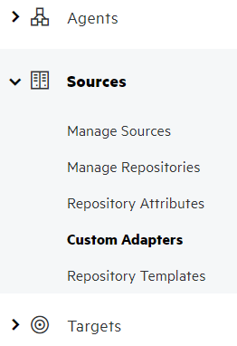
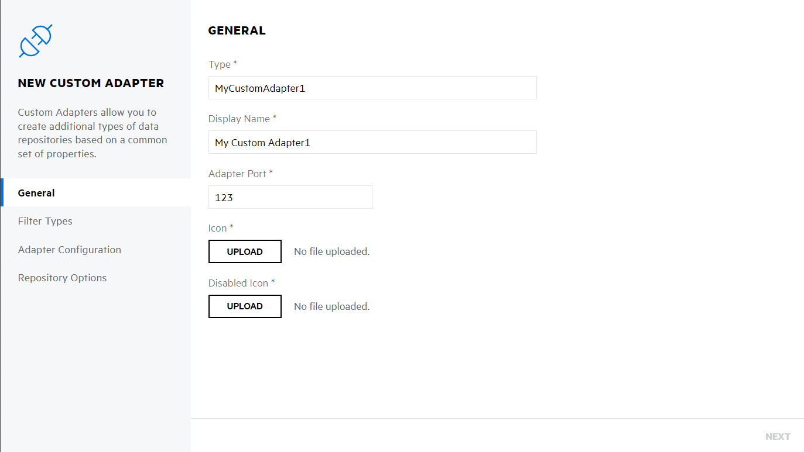
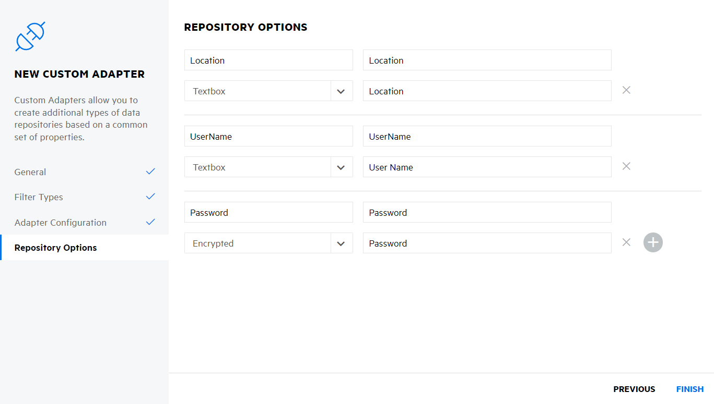

ConsoleApplicationExample
Overview
This project contains an extended version of the Adapter hosted in a console application. It works exactly the same as the basic sample but contains additional features:
- Autofac container
- Custom services registrations
- Custom configuration class
Adapter scans a folder configured in the Fusion Repository, uploading new and updated file contents and metadata to Fusion for processing.
Creating Custom Adapter in Fusion
To test the sample adapter, you'll need to set up a Custom Adapter, a Source and a Repository.
Setting up a new custom adapter
Go to Fusion / Connect screen
Navigate to Sources / Custom Adapters

Click New Custom Adapter 
Enter MyCustomAdapter into Type
Click Next until you get to Repository Options page
Add Location, UserName and Password options 
Click Finish
After adding the new adapter, you just need to create a new Source, selecting MyCustomAdapter,
- Create a new Source and a Repository using the newly created custom adapter
- In the Location text box provide a folder path you want to scan
This can be either a local path or a file share. Make sure that the current user has access to this folder.